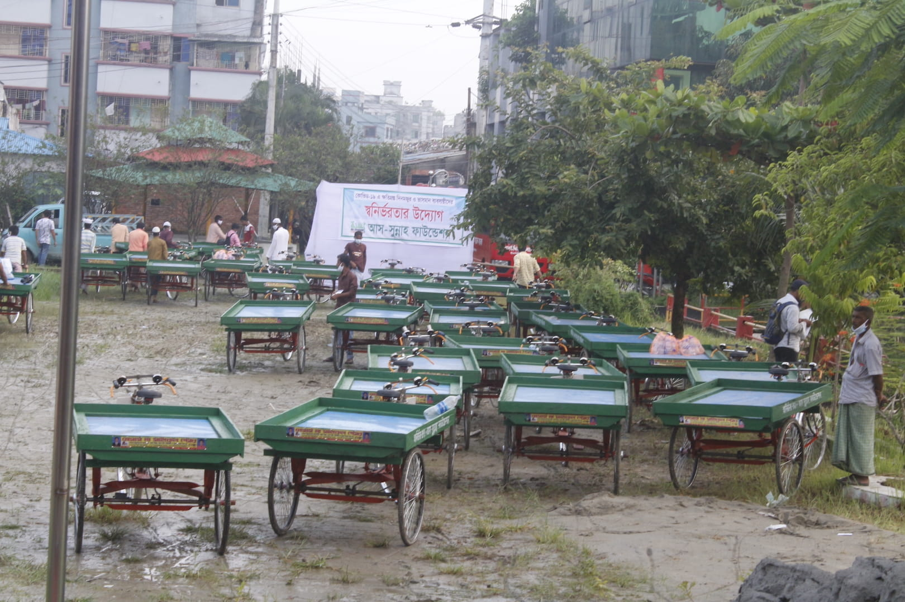
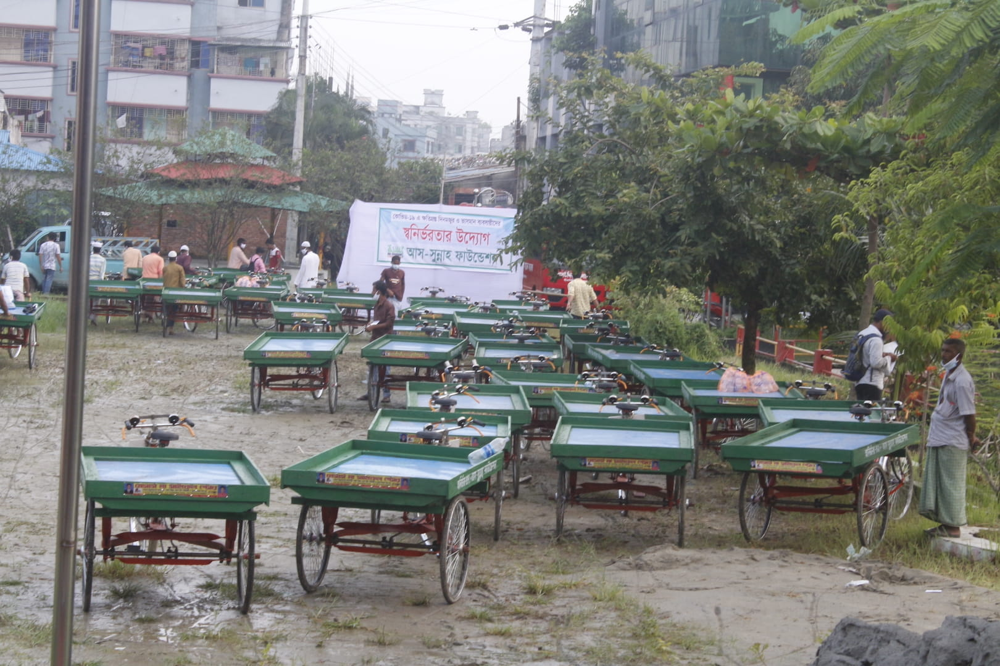

Our Donate Plan

Zakat Funds
Your transmitted Zakat can change people's lives, from providing shelter to the homeless, to feeding starving families, Zakat has the power to do great things.
Monthly donation Funds
Monthly donor members are permanent donors of the organization. Regular donations from monthly contributor members are the only permanent source of income for multifaceted da'wah activities and overall development.

Sadaqah Jariyah Funds
Sadaqah Jariyah means - the benefit of charity is not only one time; Rather, it is ongoing and continues for a long time. On the other hand, the rewards and exchange of those donations which continue for a long time, the Almighty Allah continues for a long time.
Orphan Funds
Drones offer incredible drone technology for every user. Discover the best camera drones like technology empowers us to see the future of possible.
Winter Funds
Human service is one of the teachings of Islam. As-Sunnah Foundation organizes 'Winter Clothes Distribution and Da'wah Program' every year to bring a little warmth to the helpless cold people of remote areas in Konkan winter.p>
Emergency Flood Funds
About 26,000 square kilometers (18%) of Bangladesh are flooded every year during the monsoon season. Especially the Banvasi people of the northern region of the country suffer from extreme suffering. Every year we undertake relief activities and stand beside the distressed and helpless people in the flood-affected districts of the country.
 
